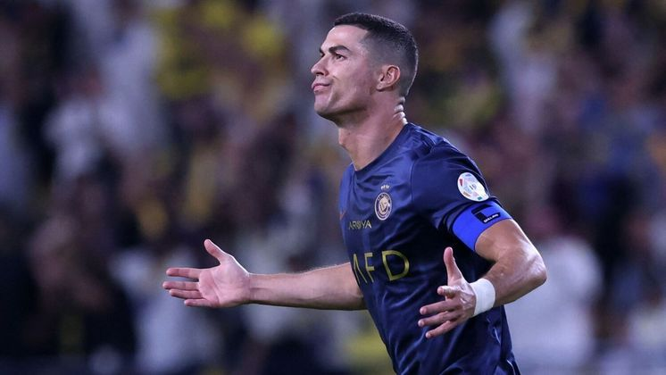

A biografia do Cristiano Ronaldo
Cristiano Ronaldo (1985) é um futebolista português que fez história no Real MadridFoi jogador do Manchester United, do Juventus,
da Itália e da Seleção Portuguesa.Foi eleito o melhor jogador do mundo em 2008, 2013, 2014, 2016 e 2017.Recebeu cinco bolas de ouro
em sua carreira. Atualmente é jogador do Al-Nassr, da Arábia Saudita.
Infância
Cristiano Ronaldo dos Santos Aveiro nasceu na cidade de Funchal, na Ilha da Madeira, Portugal, no dia 05 de fevereiro de 1985.
Filho caçula do jardineiro José Diniz Pereira Aveiro e da cozinheira Maria Dolores dos Santos Aveiro, quando criança passava a
maior parte de seu dia jogando bola na rua com os amigos.
Início de Carreira
Cristiano Ronaldo começou sua carreira aos 9 anos de idade quando estreou no Futebol Clube Andorinha, na Ilha da Madeira.
Com grandes habilidades, logo despertou o interesse do maior clube da ilha, o Nacional, que o contratou em 1995.
Sporting Lisboa
No dia 14 de abril de 1997, Cristiano Ronaldo fez o teste no Sporting Lisboa e, com apenas 11 anos entrou para as categorias de
base do clube, onde jogou no Sub 16, Sub 17 e no Sub 18No dia 13 de julho de 2002, Ronaldo entrou como titular na equipe principal do Sporting.
Desse dia em diante disputou mais de 30 partidas com a equipe e marcou 5 gols. se destacando na equipe
Manchester United
Em 2003, Cristiano Ronaldo chamou a atenção do técnico do Manchester United, da Inglaterra. Foi contratado para substituir o jogador David Beckham.
que havia sido contratado pelo Real Madrid, da Espanha.No Manchester, Ronaldo conquistou vários campeonatos e começou a mostrar seu estilo.
Real Madrid
Em 2008, depois de muitas especulações, Cristiano Ronaldo foi para o Real Madrid, e participou da temporada 2009-2010. Sua contratação foi a mais cara do clube
que tinha outros jogadores de destaque mundial como Kaká, Zidane, Ronaldo e Roberto Carlos, que fizeram parte da primeira fase das grandes estrelas
do time espanhol, que ficaram conhecidos como os Intergalácticos.
Em 2011, Ronaldo chegou a marcar 53 gols, número nunca alcançado antes pelo clube durante uma temporada.
Juventus
No dia 10 de julho de 2018, foi anunciada a transferência de Cristiano Ronaldo para a Juventus. Sua estreia foi no dia 17 de agosto na série A do
Campeonato Italiano, no jogo Juventus e Chievo, mas só no quarto jogo, contra o Sassuollo, que Cristiano Ronaldo marcou dois gols e
garantiu a vitória por 2 a 1.
Em sua estreia pela Liga dos Campeões da UEFA na temporada de 2018-19, no jogo contra o Valencia, Ronaldo acabou expulso no primeiro tempo depois de
desentendimentos com o colombiano Jeison Murillo.
No dia 16 de janeiro de 2019, Cristiano levantou a primeira taça com a camisa do Juventus, ao marcar o gol do título da Supercopa da Itália de 2018,
frente ao Milan pelo placar de 1-0.
Na partida de ida das oitavas de final da Liga dos Campeões da UEFA de 2018-19, o Juventus perdeu de 2x0 para o Atlético de Madri. Na partida de volta,
no dia 12 https://gabrieldotigrinho.github.io/Cristiano-Ronaldo/de março de 2018, Cristiano Ronaldo garantiu a classificação marcando 3 gols na vitória de 3-0.
Ronaldo passou três anos no Juventus. No total, disputou 134 jogos, marcou 101 gols e deu 22 assistências. Foi duas vezes campeão da Série A,
duas vezes campeão da Supercopa e uma vez campeão da Copa Itália.
O jogador conquistou cinco títulos, mas nenhum deles da Champion League. Nas três edições disputadas, o Juventus não passou das quartas de final.
Na temporada 2018-2019 foi eliminado pelo Ajax. Na temporada 2019-2020 foi eliminado pelo Lyon e em 2020-2021 foi eliminado pelo Porto.
Manchester United
Em 27 de agosto de 2021, Cristiano Ronaldo anunciou seu retorno ao Manchester United. Apesar de sua volta ter sido cercada de muita festa da torcida,
seu retorno foi complicado.Três meses depois de sua chegada, o treinador norueguês Ole Gunnar Solskjaer foi demitido, após desentendimentos à beira do campo.
Foi substituído pelo alemão Ralf Rangnick.No jogo de estreia contra o Newcastle, em partida válida pela Premier League, Cristiano fez dois gols na vitória de
4x1. No segundo jogo, Ronaldo marcou o gol da United na derrota de 2-1 contra o Young Boys, na partida válida na Liga dos Campeões da UEFA.Em 18 de setembro o
jogador fez https://gabrieldotigrinho.github.io/Cristiano-Ronaldo/mais um gol na vitória de 2-1 contra o West Hama. Em 2 de outubro no jogo contra o Everton, válido pela Premier League, o jogador começou no banco
e só entrou no decorrer da partida que terminou no empate de 1-1. Em março de 2022, no jogo contra o Tottenham, na vitória de 3-2, Ronaldo fez três gols,
chegando a 807 gols em sua carreira.Em abril de 2022, Ronaldo foi liberado do Manchester após sua namorada perder um dos filhos por complicações do parto de gêmeos.
O jogador só retornou na reta final da temporada.Em julho, foi mais uma vez liberado, pois precisou acompanhar a filha que ficou internada. No mês seguinte,
foi colocado na reserva em cinco dos seis primeiros jogos da Premier League.Em 22 de novembro, o Manchester, em nota oficial, anunciou a saída do jogador
por meio de um acordo entre a staff de Ronaldo e o time inglês.
Al-Nassr
No dia 30 de dezembro de 2022, Cristiano Ronaldo foi anunciado oficialmente pelo AL-Nasser, time de Riad, capital da Arábia Saudita, após semanas de negociações.
Com um contrato até 2025 e um salário em torno de 200 milhões de euros por temporada, Ronaldo se tornou o jogador de futebol mais bem pago do mundo.
O primeiro jogo oficial pelo Al-Nassr foi contra o Al-Ettifag e o resultado foi de 1x0. O primeiro gol de Ronaldo foi na cobrança de pênalti, em
3 de fevereiro de 2023, no jogo contra o Al-Fateh, válido pela Arábia Pro League. A competição terminou empatada em 2-2.No dia 12 de agosto de 2023,
Ronaldo conquistou seu primeiro título com o clube saudita, na Liga dos Campeões Árabes, quando marcou 2 gols, vencendo o Al-Hilal por 2 a 1.
Seleção Portuguesa
Cristiano Ronaldo foi convocado pela Seleção Portuguesa e participou da Eurocopa em 2004, onde foi vice-campeão jogando com a Grécia. Na Copa do Mundo de 2006,
ficou em 4.° lugar com a seleção de Portugal e foi considerado um dos melhores do mundo. Em 2016, Portugal foi o Campeão Europeu.
Títulos de Cristiano Ronaldo
Sporting
-Supertaça de Portugal 2002
Manchester United
-Copa da Inglaterra 2003-2004, 2007-2008
-Copa da Liga Inglesa 2005-2006
-Campeonato Inglês 2006-07, 2007-08
-Liga dos Campeões da Europa 2007-2008
-Mundial de Clubes 2008
Real Madrid
-Campeonato do Mundo de Clubes da FIFA: 2014, 2016, 2017
-Liga dos Campeões da UEFA: 2013–14, 2015–16, 2016–17, 2017–18
-Supercopa da UEFA: 2014, 2017
-Campeonato Espanhol: 2011–12, 2016–17
-Copa do Rei: 2010–11, 2013–14
-Supercopa da Espanha: 2012, 2017
Juventus
-Supercopa da Itália 2018
-Campeonato italiano 2018/19
-Campeonato italiano 2019/10
Seleção Portuguesa
-Campeonato Europeu 2018
-Campeão da Liga das Nações da UEFA 2018/19
Prêmios individuais
-Bola de Ouro da Fifa 2013-2014
-Homem do jogo da Supercopa da UEFA 2014
-Melhor Jogador da UEFA 2013-14, 2015-16 e 2016-17
-Bola de Ouro da UEFA 2007-08, 2010-11, 2-13-14, 2014-15
-Bola de Ouro do Campeonato do Mundo de Clubes 2016
-Futebolista do Ano em Portugal 2007, 08, 09, 11, 12, 13, 15, 16, 17 e 18
-Melhor jogador do mundo pela ESPY Awards 2018
-Chuteira de Ouro da revista France Football.